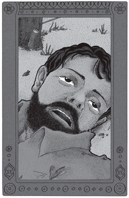
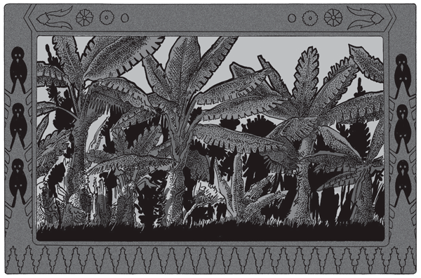
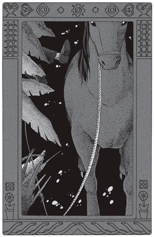

El hombre y su machete acababan de limpiar la quinta calle del bananal. Faltábanles aún dos calles; pero como en éstas abundaban las chircas y malvas silvestres, la tarea que tenían por delante era muy poca cosa. El hombre echó, en consecuencia, una mirada satisfecha a los arbustos rozados, y cruzó el alambrado para tenderse un rato en la gramilla.
Mas al bajar el alambre de púa y pasar el cuerpo, su pie izquierdo resbaló sobre un trozo de corteza desprendida del poste, a tiempo que el machete se le escapaba de la mano. Mientras caía, el hombre tuvo la impresión sumamente lejana de no ver el machete de plano en el suelo.
Ya estaba tendido en la gramilla, acostado sobre el lado derecho, tal como él quería. La boca, que acababa de abrírsele en toda su extensión, acababa también de cerrarse. Estaba como hubiera deseado estar, las rodillas dobladas y la mano izquierda sobre su pecho. Sólo que tras el antebrazo e inmediatamente por debajo del cinto, surgían de su camisa el puño y la mitad de la hoja del machete; pero el resto no se veía.
El hombre intentó mover la cabeza, en vano. Echó una mirada de reojo a la empuñadura del machete, húmeda aún del sudor de su mano. Apreció mentalmente la extensión y la trayectoria del machete dentro de su vientre, y adquirió, fría, matemática e inexorablemente, la seguridad de que acababa de llegar al término de su existencia.
La muerte. En el transcurso de la vida se piensa muchas veces en que un día, tras años, meses, semanas y días preparatorios, llegaremos a nuestro turno al umbral de la muerte. Es la ley fatal, aceptada y prevista; tanto que solemos dejarnos llevar placenteramente por la imaginación a ese momento, supremo entre todos, en que lanzamos el último suspiro.
Pero entre el instante actual y esa postrera espiración, ¡que de sueños, trastornos, esperanzas y dramas presumimos en nuestra vida! ¡Qué nos reserva aún esta existencia llena de vigor, antes de su eliminación del escenario humano! Es éste el consuelo, el placer y la razón de nuestras divagaciones mortuorias. ¡Tan lejos está la muerte, y tan imprevisto lo que debemos vivir aún!
 |
El hombre intentó mover la cabeza, en vano. |
¿Aún…? No han pasado dos segundos: el sol está exactamente a la misma altura; las sombras no han avanzado un milímetro. Bruscamente, acaban de resolverse para el hombre tendido las divagaciones a largo plazo: se está muriendo.
Muerto. Puede considerarse muerto en su cómoda postura. Pero el hombre abre los ojos y mira. ¿Qué tiempo ha pasado? ¿Qué cataclismo ha sobrevenido en el mundo? ¿Qué trastorno de la naturaleza trasuda el horrible acontecimiento?
Va a morir. Fría, fatal e ineludiblemente, va a morir.
El hombre resiste –¡es tan imprevisto ese horror!–. Y piensa: es una pesadilla; ¡esto es! ¿Qué ha cambiado? Nada. Y mira: ¿no es acaso ese bananal su bananal? ¿No viene todas las mañanas a limpiarlo? ¿Quién lo conoce como él? Ve perfectamente el bananal, muy raleado, y las anchas hojas desnudas al sol. Allí están muy cerca, deshilachadas por el viento. Pero ahora no se mueven… Es la calma de mediodía; pronto deben ser las doce.
Por entre los bananos, allá arriba, el hombre ve desde el duro suelo el techo rojo de su casa. A la izquierda, entrevé el monte y la capuera de canelas. No alcanza a ver más, pero sabe muy bien que a sus espaldas está el camino al puerto nuevo; y que en la dirección de su cabeza, allá abajo, yace en el fondo del valle el Paraná dormido como un lago. Todo, todo exactamente como siempre; el sol de fuego, el aire vibrante y solitario, los bananos inmóviles, el alambrado de postes muy gruesos y altos que pronto tendrá que cambiar.
¡Muerto! ¿Pero es posible? ¿No es éste uno de los tantos días en que ha salido al amanecer de su casa con el machete en la mano? ¿No está allí mismo, a cuatro metros de él, su caballo, su malacara, oliendo parsimoniosamente el alambre de púa?
¡Pero sí! Alguien silba… No puede ver, porque está de espaldas al camino; mas siente resonar en el puentecito los pasos del caballo… Es el muchacho que pasa todas las mañanas hacia el puerto nuevo, a las once y media. Y siempre silbando… Desde el poste descascarado que toca casi con las botas, hasta el cerco vivo de monte que separa el bananal del camino, hay quince metros largos. Lo sabe perfectamente bien, porque él mismo, al levantar el alambrado, midió la distancia.
¿Qué pasa, entonces? ¿Es ése o no un natural mediodía de los tantos en Misiones, en su monte, en su potrero, en su bananal ralo? ¡Sin duda! Gramilla corta, conos de hormigas, silencio, sol a plomo…
Nada, nada ha cambiado. Sólo él es distinto. Desde hace dos minutos su persona, su personalidad viviente, nada tiene ya que ver ni con el potrero, que formó él mismo a azada, durante cinco meses consecutivos; ni con el bananal, obra de sus solas manos. Ni con su familia. Ha sido arrancado bruscamente, naturalmente, por obra de una cáscara lustrosa y un machete en el vientre. Hace dos minutos: se muere.
El hombre, muy fatigado y tendido en la gramilla sobre el costado derecho, se resiste siempre a admitir un fenómeno de esa trascendencia, ante el aspecto normal y monótono de cuanto mira. Sabe bien la hora: las once y media… El muchacho de todos los días acaba de pasar sobre el puente.
¡Pero no es posible que haya resbalado…! El mango de su machete (pronto deberá cambiarlo por otro; tiene ya poco vuelo) estaba perfectamente oprimido entre su mano izquierda y el alambre de púa. Tras diez años de bosque, él sabe muy bien cómo se maneja un machete de monte. Está solamente muy fatigado del trabajo de esa mañana, y descansa un rato como de costumbre.
¿La prueba…? ¡Pero esa gramilla que entra ahora por la comisura de su boca la plantó él mismo, en panes de tierra distantes un metro uno de otro! Y ése es su bananal; y ése es su malacara, resoplando cauteloso ante las púas del alambre! Lo ve perfectamente; sabe que no se atreve a doblar la esquina del alambrado, porque él está echado casi al pie del poste. Lo distingue muy bien; y ve los hilos oscuros de sudor que arrancan de la cruz y del anca. El sol cae a plomo, y la calma es muy grande, pues ni un fleco de los bananos se mueve. Todos los días, como ése, ha visto las mismas cosas.
 |
Y ése es su bananal. |
…Muy fatigado, pero descansa sólo. Deben de haber pasado ya varios minutos… y a las doce menos cuarto, desde allá arriba, desde el chalet de techo rojo, se desprenderán hacia el bananal su mujer y sus dos hijos, a buscarlo para almorzar. Oye siempre, antes que las demás la voz de su chico menor que quiere soltarse de la mano de su madre: ¡Piapiá! ¡Piapiá!
¿No es eso…? ¡Claro, oye! Ya es la hora. Oye efectivamente la voz de su hijo…
¡Qué pesadilla…! ¡Pero es uno de los tantos días, trivial como todos, claro está! Luz excesiva, sombras amarillentas, calor silencioso de horno sobre la carne, que hace sudar al malacara inmóvil ante el bananal prohibido.
…Muy cansado, mucho, pero nada más. ¡Cuántas veces, a mediodía como ahora, ha cruzado volviendo a casa ese potrero, que era capuera cuando él llegó, y que antes había sido monte virgen! Volvía entonces, muy fatigado también, con su machete pendiente de la mano izquierda, a lentos pasos.
Puede aún alejarse con la mente, si quiere; puede si quiere abandonar un instante su cuerpo y ver desde el tajamar por él construido el trivial paisaje de siempre: el pedregullo volcánico con gramas rígidas; el bananal y su arena roja; el alambrado empequeñecido en la pendiente, que se acoda hacia el camino. Y más lejos aun ver el potrero, obra sola de sus manos. Y al pie de un poste descascarado, echado sobre el costado derecho y las piernas recogidas, exactamente como todos los días, puede verse a él mismo, como un pequeño bulto asoleado sobre la gramilla… descansando porque está muy cansado…
 |
El caballo rayado de sudor ve también al hombre. |
Pero el caballo rayado de sudor, e inmóvil de cautela ante el esquinado del alambrado, ve también al hombre en el suelo y no se atreve a costear el bananal, como desearía. Ante las voces que ya están próximas –¡Piapiá!–, vuelve un largo, largo rato las orejas inmóviles al bulto; y, tranquilizado al fin, se decide a pasar entre el poste y el hombre tendido… que ya ha descansado.
Tomado de El desierto (1924)